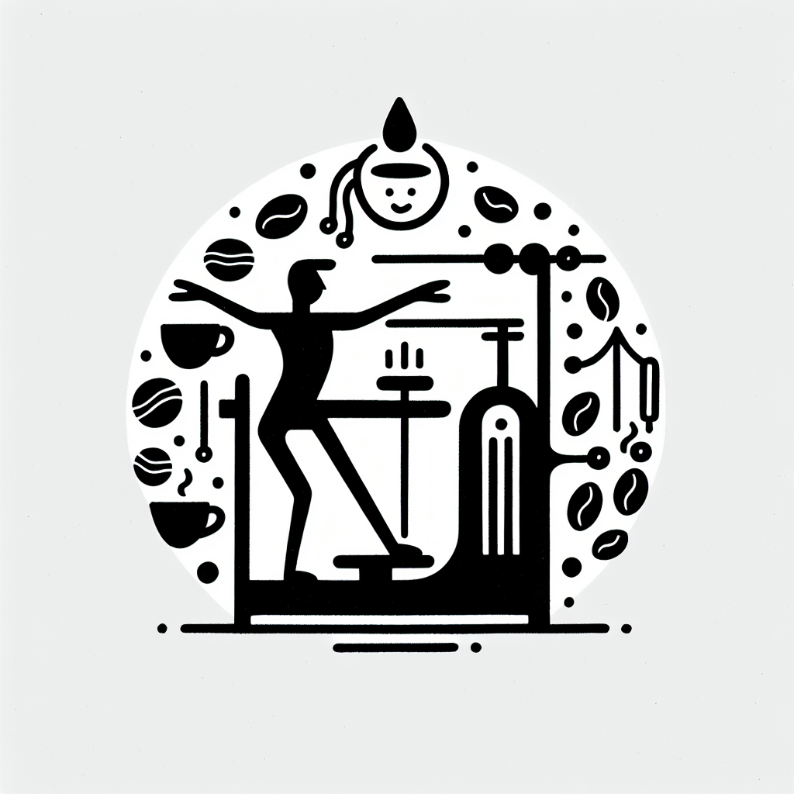

Lagree pour les hommes : brisez les idées reçues
Lagree pour les hommes : brisez les idées reçues
Sur la côte basque, le lifestyle 'Healthy & Surf' est plus qu'une tendance ; c'est un mode de vie. Puisque le bien-être est au cœur de cette région d'exception, pourquoi ne pas repousser vos limites avec le Lagree ? Si vous pensez que cette méthode est réservée aux femmes, il est temps de reconsidérer cette idée ! Dans cet article, nous brisons les stéréotypes et vous invitons à explorer pourquoi le Lagree chez DOZ Anglet est également conçu pour les hommes.
Qu'est-ce que le Lagree et pourquoi les hommes devraient-ils s'y intéresser ?
Le Lagree est souvent comparé au Pilates, mais ne vous y trompez pas ; il en est une version beaucoup plus intense. Avec des machines MegaPro ultra sophistiquées, cette méthode offre un entraînement complet, alliant renforcement musculaire, endurance, équilibre et flexibilité.
- Renforcement Musculaire : Idéal pour tonifier et sculpter le corps.
- Entraînement Cardiovasculaire : Gardez votre rythme cardiaque élevé pour brûler les graisses.
- Faible Impact : Minimise les risques de blessures tout en restant intensif.
Tous ces avantages font du Lagree un choix de prédilection pour les surfeurs et autres passionnés de sport qui souhaitent améliorer leur performance globale sans impact négatif sur leurs articulations. Les hommes aussi bien que les femmes peuvent tirer parti de ses bénéfices.
Des bénéfices qui parlent d'eux-mêmes
Beaucoup d'hommes hésitent à essayer le Lagree, pensant que ce type d'entraînement est trop « doux ». Pourtant, cette méthode peut vous donner bien plus qu'une simple session de gym.
- Force Fonctionnelle : L'amélioration de la force fonctionnelle et de la stabilité contribue à une meilleure performance dans d'autres sports comme le surf ou le ski.
- Posture : Un focus sur le core et les muscles posturaux aide à corriger la posture, important pour ceux qui passent de longues heures assis.
- Souplesse et Mobilité : D'excellents atouts pour éviter les blessures musculaires et articulaires.
Chez DOZ, nous croyons fermement que ces bénéfices ne sont pas réservés à un seul genre, mais bien à tous ceux qui désirent vivre une vie active et en bonne santé.
L'expérience unique du Studio Lagree chez DOZ Anglet
Situé au cœur d'Anglet, DOZ n'est pas simplement un lieu d'entraînement ; c'est une communauté. Notre Studio Lagree accueille tout le monde, qu'il s'agisse de débutants ou d'athlètes confirmés. Le studio est minimaliste, alliant béton, bois et métal dans une ambiance lumineuse, créant ainsi un environnement propice à l'effort sans distraction inutile.
Chaque cours est une opportunité de repousser ses limites, encouragé par des coachs experts qui comprennent vos besoins et vos objectifs. Se lancer dans le Lagree chez DOZ, c'est aussi profiter de l'aspect social et inspirant de notre communauté 'Healthy & Surf'.
Terminez votre séance avec un moment de réconfort
Après l'effort, le réconfort. Quoi de mieux que de savourer un café de spécialité dans notre Coffee Shop ? Nous proposons une cuisine saine, locale et de saison qui ravira vos papilles après une séance intense.
Nos grains de café sont torréfiés avec soin pour offrir un plaisir optimal. L'idée est de sublimer vos sens comme vos efforts, et rien ne vaut un moment de détente pour récupérer et repartir du bon pied.
Rejoignez-nous dès aujourd'hui !
Le Lagree est une méthode innovante qui s'adresse à tous, hommes inclus ! Que vous soyez un sportif aguerri ou un novice curieux, notre équipe chez DOZ Anglet est prête à vous accueillir.
Réservez dès aujourd'hui votre séance d'essai et découvrez par vous-même pourquoi le Lagree est fait pour vous. Venez vous dépenser et vous ressourcer dans notre espace unique, alliant sport et réconfort avec passion et authenticité. Rejoignez notre communauté et vivez l'Instant Brut !
Votre aventure commence maintenant chez DOZ. Les préjugés appartiennent au passé ; il est temps de redéfinir ce que signifie le bien-être pour les hommes, ici et maintenant.